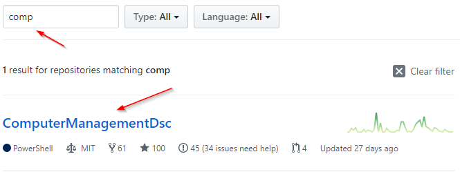
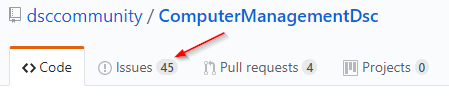
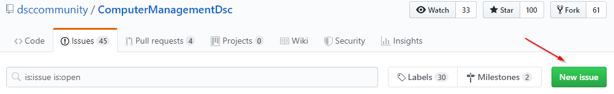
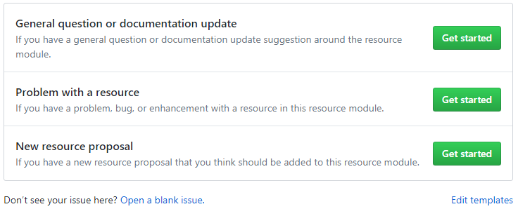
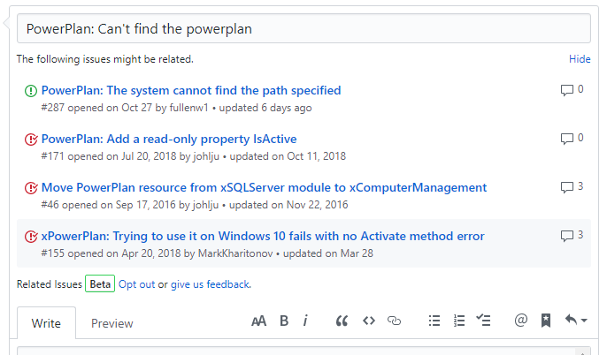
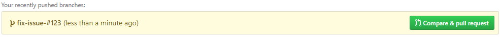
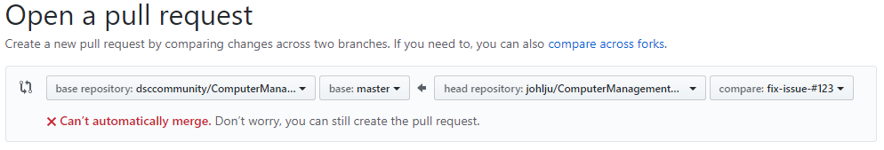
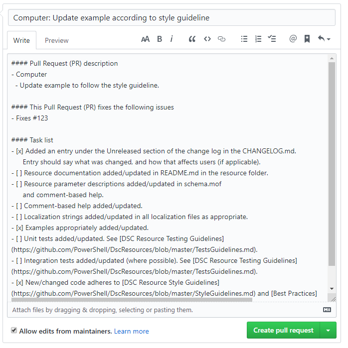
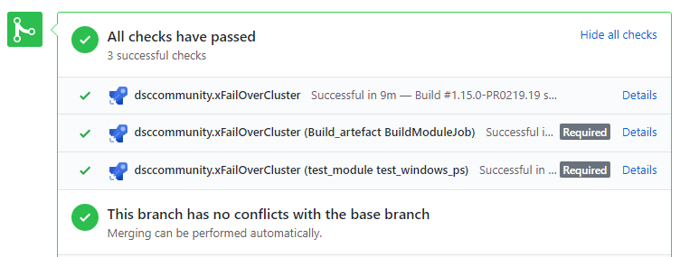
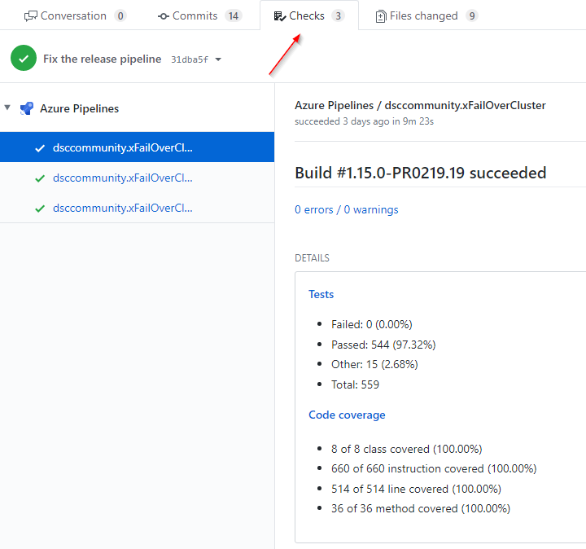

Thank you for your interest in contributing to the DSC Community.
There are several ways you can contribute.
If want to contribute my making changes to code or documentation but are new to contributing and GitHub, then please read the Getting Started as a Contributor guideline.
You may also join the conversation and ask for help or share your knowledge in direct communication with other members of the community.
If you need any help along the way, don’t be afraid to ask. We are here for each other.
You can read more about the different contributions here:
Submitting an issue to a repository in the the DSC Community is easy! An issue can be a problem, a solution, or a question.
You may also join the conversation and ask for help from other members of the community.
For example, let us pretend we have a problem with the ComputerManagementDsc module that we need to report to the community.
Browse to the list of all repositories in DSC Community and in the search field type ‘comp’. GitHub should automatically filter the results and show the repositories that match what you typed.

Click on the repository name ComputerManagementDsc to open up the repository.
Search the issues to check that there are no issues already submitted for the problem you are having. If someone has already opened a similar issue, please leave a comment or add a GitHub reaction on the issue description to express your interest. You can also offer help and use the issue to coordinate your efforts in fixing the issue.
If you cannot find an issue that matches the problem you are having, then you are welcome to submit a new issue.
Click on the Issue tab.

Click on the New issue button. At this point you must sign in to GitHub.

At this point we are shown the issue templates if the repository have implemented those, otherwise this will step will be skipped.
But since we are pretending to have a problem, choose the template Problem with a resource since it best matches the issue we want to submit.

Please read the template text in the description field. The template text is there to help you provide as much information as possible so it is easier for the community to help you with your issue.
Write a short but descriptive issue title. The issue title should be a brief summary of your issue in one sentence. While you write you will get suggestions on previous issues that can be related to that issue. Please verify so that no issue that are suggest covers the issue you are having.
If you would like to submit an issue that would include a breaking change, please also refer to our Breaking changes section below.

The issue description should contain a detailed report of the issue you are submitting. If you are submitting a bug, please include any error messages or stack traces caused by the problem. The verbose log can also be very helpful and are often requested by the issue template. You can read more about how to get the verbose log in the article How to use DSC logging.
Please reference any related issues or pull requests by a pound sign followed by the issue or pull request number (e.g. #11, #72). GitHub will automatically link the number to the corresponding issue or pull request. You can also link to pull requests and issues in other repositories by including the repository owner and name before the issue number.
Please also tag any GitHub users you would like to be notified of this issue
(if any). You can tag someone on GitHub with the @ symbol followed by their
GitHub account name, e.g. @johlju.
Fill in each section in the template as necessary. The more detail you provide, the easier it will be for the community to help you with your issue.
This example does not provide much context. It has also been shortened for the sake of brevity.
#### Details of the scenario you tried and the problem that is occurring
It cannot find the power plan when I...
The issue #11, #72, and PowerShell/xPSDesiredStateConfiguration#160
is related
#### Verbose logs showing the problem
```
VERBOSE: [APPVYR-WIN]: LCM: [ Start Set ]
VERBOSE: [APPVYR-WIN]: LCM: [ Start Resource ] [[PowerPlan]SetPowerPlan]
...
Verbose log showing the actual error
...
VERBOSE: [APPVYR-WIN]: LCM: [ End Resource ] [[PowerPlan]SetPowerPlan]
VERBOSE: [APPVYR-WIN]: LCM: [ End Set ]
```
#### Suggested solution to the issue
None.
#### The DSC configuration that is used to reproduce the issue (as detailed as possible)
```powershell
PowerPlan SetPlanHighPerformance
{
IsSingleInstance = 'Yes'
Name = 'MyPowerPlan'
}
```
#### The operating system the target node is running
```
OsName : Microsoft Windows Server 2019 Datacenter
```
#### Version and build of PowerShell the target node is running
```
Name Value
---- -----
PSVersion 5.1.17763.592
```
#### Version of the DSC module that was used.
6.4.0
Breaking changes should first be proposed by opening an issue on the resource and outlining the work needed. This allows the community to discuss the change before the work is done and scopes the breaking changes to just the needed areas.
An issue that is deemed to be a breaking changed should be labelled breaking change
and the issue title should be prefixed with BREAKING CHANGE:.
Breaking changes may include:
A pull request (PR) that introduces a breaking change should prefix at
least one entry in the change log with BREAKING CHANGE:. The entry
should clearly explain what the breaking change is and how it will affect
users.
Your experience as an IT professional is needed to make the DSC resources better. Regardless of your knowledge in DSC you can help make the DSC resource the best possible. In the end, DSC is installing and configuring the applications and components you use, so by discussing issues and changes in PR’s you help make the DSC resources even better.
Always keep in mind the Code of Conduct.
You may work on any issue. Issued labeled with good first issue has been
deemed easy to resolve, although the level of ease can vary from
issue to issue.
If you are new to contributing, then you might want to start with an issue labeled with
good first issuesince they are meant for you as new contributor to have something easy from where to start learning the process and workflow.
If you find an issue you would like to resolve then please comment on that issue that you are working on it. This helps others in the community to know that this is being worked on, and keeps other contributors from working on the same issue.
After you have created a pull request (PR) the PR will be reviewed by the community.
It is rare, but issues can be labeled on hold by the maintainer
and these issues should normally not be worked on. The reason why it has
been put on hold should have been mentioned as a comment on the issue.
If you are new to contributing in general then please read the Getting Started as a Contributor which will help you set up an environment for developing.
Make sure there is an issue that describes your problem. If there is no issue then please create an issue prior to sending in a PR so that others in the community can discuss. You may create the issue and then directly submit in a PR.
If you are making a breaking change, please make sure to read the Breaking changes section.
Here is the general process of submitting a PR:
master. See
Making changes and pushing them to the fork.CHANGELOG.md) in accordance to the type of changes in keep a changelog.master of the upstream repository.When writing code for any of the modules in the DSC Community, please follow the Style Guidelines.
These guidelines are specific to the DSC Community and may not always reflect the same PowerShell style as other projects. Code reviewers will expect you to follow these guidelines and may ask you to change your code for consistency.
When using Visual Studio Code there are also custom Script Analyzer rules that will give visual help (e.g. squiggly lines) when the code are not following the style guideline. This does not currently support every guideline in the style guidelines.
For code changes to be accepted you should have written tests, some repositories requires both unit and integration tests.
You are required to provide adequate test coverage for the code you change.
See Testing Guidelines for more information.
Not all resources currently have tests. This does not mean that you do not have to write tests for your changes. But you do not have to write the full set of tests for the resource. You only need to test the changes that you made to the resource. But adding unit tests for uncovered code that you have not altered is welcomed.
Each repository has a changelog (CHANGELOG.md) that is required to be
updated. For each change an entry should be added to the changelog. The
entry should in the past tense explain what changed, and how it
affects users (if applicable). Also reference any issues that have been
resolved.
For breaking changes see Breaking changes section.
The types of changes that can be used (as per keep a changelog) are:
### Added - for new features.### Changed - for changes in existing functionality.### Deprecated - for soon-to-be removed features.### Removed - for now removed features.### Fixed - for any bug fixes.### Security - in case of vulnerabilities.Example of the Unreleased section of the file CHANGELOG.md.
## [Unreleased]
### Added
- ActiveDirectoryDsc
- Added DSC resource ADOptionalFeature that will enable the Active
Directory Optional Feature of choice for the target forest
([issue #162](https://github.com/dsccommunity/ActiveDirectoryDsc/issues/162)).
### Removed
- ADRecycleBin
- BREAKING CHANGE: The DSC resource was replaced by the DSC resource
ADOptionalFeature ([issue #162](https://github.com/dsccommunity/ActiveDirectoryDsc/issues/162))..
### Changed
- ADDomain
- The property DomainName was changed to always return the same value
as was passed in as the parameter. For the fully qualified domain
name (FQDN) of the domain see the new read-only property `DnsRoot`.
A pull request (PR) allows you to submit the changes you made in your working branch of you fork to the upstream repository. There are many ways of opening a pull request, but this document covers two common methods.
First browse to your fork, e.g. https://github.com/johlju/ComputerManagementDsc
If you just pushed a working branch to you fork GitHub will know that and suggest to send in a pull request, Just click on the button Compare & pull request.

If that is not shown, another way to open a PR is to choose the working branch in the list of branches of your fork, let the page refresh, and then click the button New pull request.
Once you have used either option to get to the Open a pull request page you should make sure you are comparing the right branches. If you used either of the above methods to get to the page the compare should already be correct.
The base is the repository and branch the pull request will be targeting
(or merged) into. Normally this should be the upstream repository,
and normally the branch should be master.
The head repository is the repository where the working branch exists and
the compare is the branch being compared to the base branch (master).
If GitHub tells you that your branches cannot automatically be merged, then you probably have merge conflicts. You can resolve these before or after sending in a pull request. The merge conflicts must be resolved before the pull request can be merged, and a reviewer might ask you to resolve them before a review can be done.
For help fixing merge conflicts see the section Resolve merge conflicts

Next, you need to write a short but descriptive PR title. The PR title should be a brief summary of the PR in one sentence. Simply putting the issue number that the PR fixes is not acceptable. Prefix the title with the DSC resource name, or the repository name if the change is not specific to one DSC resource. A suggestion is to build the title from the entries you made in the changelog.
For breaking changes see Breaking changes section.
The PR description field is populated with the pull request template to easier fill in the needed information.
- Fixes #123 (this will allow GitHub
to auto-close the issues once this PR is merged).Please also tag any GitHub users you would like to be notified of this PR
(if any). You can tag someone on GitHub with the @ symbol followed by
their GitHub account name, e.g. @johlju.
If you have a specific contributor/maintainer you want to review your code,
be sure to tag them in your pull request.
This is an example how a PR can look before submitting.

When you are done, simply click Create pull request and the pull request will be created in the upstream repository.
You will then need to wait for the PR to be reviewed. You cannot review your own code. Only maintainers can merge your code, and they do that only after a review has been completed and all review comments have been addressed and approved.
Please see make changes to an existing pull request of yours.
For each commit that is sent in to a pull request (PR) the CI pipeline will build and test the DSC module. It is the same pipeline that is used in the coding workflow.
Status of the runs can be seen in the status checks of the pull request.

More details can be seen on the Checks pane.

A maintainer will not merge your PR if any tests are failing, even if they have nothing to do with your changes. If test failures are occurring that do not relate to the changes you made those issue must be resolved before the PR can be merged. If you don’t know how to resolve them then please contact the maintainer of the repository.
Anyone is allowed to review pull requests (PR). You are strongly encouraged to help review since you probably have some experience of the application or component the DSC resource is used for. The more minds on a PR the better the DSC resource will get, so we can help see impacts further down the road, like avoiding future breaking changes.
Please also consider that maintainers may not have expert knowledge in an area that a PR is targeting. Maintainers may also not be able to review PR’s in a timely fashion due to other commitments. However, it is hoped that help and support will come from community members such as yourself.
Only maintainers can merge your code, and a maintainer only merges after the PR has been approved in a review.
Only maintainers are allowed to review and merge their own code, but then only after 24 hours so the community has a chance to comment on the changes.
We don’t currently have dedicated maintainers for most modules, so it may take a while for a general maintainer to get around to your pull request. Please be patient. If you want to become a maintainer, please see Maintainers.
If you have an urgent issue that needs to be reviewed in a repository that does not have a maintainer, or you haven’t heard from the repository maintainer for a period of time. Then it possible to ask for reviews from the other community members or general maintainers via Slack #DSC channel.
All documentation is done in markdown.
Updating documentation is done by sending in a pull request (PR). The same principles as fixing an issue or submitting a feature apply here: An issue should be created first.
NOTE: The Wiki is updated from the pipeline so it cannot be updated manually. Any manually changes to the Wiki will be lost on next release.
If you would like to add a new DSC resource, please open an issue in the repository you think the new resource should be in. This will help to coordinate your work with other contributors. The repositories have a template New resource proposal that can help you provide the needed information, for example providing a proposed schema for the community to discuss, and make sure it adopts DSC resource standard patterns. Keep an eye on the issue and any discussion around the new DSC resource proposal.
A suggestion is to wait for acknowledgement from the community (or maintainer) to include the resource before you start working on the new DSC resource. For example if the proposed schema must be extended or changed in some way you might have to build the logic differently.
Once the issue is open, you may begin working on the new DSC resource. Just like submitting a pull request to fix an issue, a pull request containing the proposed DSC resource should be submitted.
Be sure to include unit and integration tests for the new DSC resource, and document it like other DSC resources.
Any test or example files for the resource should be named to match the
files for the same resource. For example, if the main resource file is
named DSC_Resource.psm1, then the unit test file should be named
MSFT_Resource.Tests.ps1. Consistent naming helps the review process.
All mof-based resources should have DSC_ prefixed before the resource name
in the schema file and on files (e.g. ``DSC_Resource.schema.mof, DSC_Resource.psm1).
This is per a convention that the name (or abbreviated name) of the
company that provides the resource be included in the name of mof-based
resource files. The friendly name of the resource that is defined in the
.moffile should not have theDSC_` prefix.
Composite resources with a configuration and a .psd1 file must have the
exact same name as the resource or they will not be able to be imported.
Hence, composite resource files should not have the DSC_ prefix, e.g.
Resource.psm1.
You are welcome to transfer your DSC module to the DSC Community GitHub organization, or we will happily create a repository for your new DSC resource module. You will then be made a maintainer with administrator privileges on that repository.
The module must use the Plaster template that is generated by the Sampler project to correctly use the CI pipeline needed.
Please contact a committee member, preferably on the Slack #DSC channel, if you need a new empty repository or if you want to transfer an existing repository.
The normal workflow is as follows:
This is only for you that have previously contributed to a repository and might have a previous local repository folder.
The file .gitignore included an entry DscResource.Tests which means
that there might be a folder in your local repository folder with that
name. That folder are no longer used and will give you trouble if it is
still present.
DscResource.Tests inside your local repository
folder.Pay attention to any new code merged into the master branch of an official repository.
If this occurs, you will need to pick-up these changes in your fork using the rebase
instructions in our guide to getting started with GitHub.
This needs to be repeated each time changes are made to the file
RequiredModules.psd1, or if there are new releases of external modules
listed in the file RequiredModules.psd1.
Running this command will make sure the dependencies are resolved and to prepare the build and test environment.
.\build.ps1 -ResolveDependency -Tasks noop
NOTE: This does not install anything, it downloads the prerequisites into the
outputfolder.
KNOWN ISSUE: There are currently an known issue with this task when moving between local DSC repositories. If you have resolved dependencies in one repository, then move to a second repository and resolve dependencies all dependencies do not download (the module PowerShell-Yaml). This is because the module is already imported into the session. To workaround this make sure to open each new local DSC repository in a separate PowerShell session.
This builds the module after which tests can be run on the built module. The built module will have the same structure as the one that is released.
This must be run each time changes have been made to files in the source folder.
.\build.ps1 -Tasks build
The application GitVersion is used in the pipeline to determine the next version if it is installed. If
gitversionis not installed then the build version will always be reported as0.0.1. To install GitVersion see install GitVersion
See Testing Guidelines for more information on how to run tests.
cannot find "s.psd1"This has been known to happen in the CI build pipeline when running in
Azure DevOps. This is because the build pipeline cannot find or resolve
the correct module manifest so it tries to be smart and trying to resolve
the module name based on the root project folder path which is s.
Make sure the module manifest is in the correct location, can be imported.
This can also happen when the module ModuleBuilder is not pinned to
version 1.0.0 in the file RequiredModules.psd1.
Missing property 'ProjectName'Verify that the module manifest resolves with the cmdlet Test-ModuleManifest
and does not return any errors. Make sure it resolves correctly in both
Windows PowerShell and PowerShell Core. The build is running on Linux
in the ci pipeline.
Cannot process argument transformation on parameter 'ProjectName'If the old test framework folder DscResource.Tests is present in the local
repository folder then the build will fail with this error. The reason is that
build pipeline searches for *.psd1 files and want to use the first module
manifest it finds which when the folder DscResource.Tests is present is the
wrong one.
There are a issue with ModuleBuilder using preview strings
using dash, e.g. fix0008-9. The string is compliant with SemVer 2.0
but there is a bug in Publish-Module that prevents the module to be
released.
Make sure to pin the ModuleBuilder to version 1.0.0 in the file
RequiredModules.psd1.
We are moving to Azure DevOps because Azure Pipelines gives us better services on a free plan that can be created by all contributors for open source projects. For example it gives us longer run time per job (currently 6 hours) plus the ability to run parallel jobs.
Adding your fork to a free Azure DevOps organization means that when you push a working branch to your fork and it will be tested the same way as when you send in a PR.
This is similar to what the upstream repository is using to run CI pipeline, it is using the https://dev.azure.com/dsccommunity organization.
This can be used to test that everything works as expected before sending in a PR. It can also be used to start a test run that takes a long time without having the development environment powered on. Just commit and push the changes and the Azure Pipelines will run the CI for you.
azure-pipelines.yml by browsing the branch you
recently pushed above.* (asterisk).Next time you push a commit to a branch in your fork, the Azure Pipeline will trigger on that and start a run.
NOTE: Even if we chose the
azure-pipelines.ymlfile from the working branch in the previous steps that specificazure-pipelines.ymlfile will not always be used, instead theazure-pipelines.ymlfile from the branch (or the commit) being run in the pipeline will be used. So if you make changes to the fileazure-pipelines.ymlthose changes will be reflected when you run the pipeline.
If another pull request is merged while yours is in review, you will need
to add those new changes into your working branch before your pull request
is allowed to merge. To do this we will ‘rebase’ the branch. This means that
the changes you made in your working branch for your pull request will be
‘replayed’ on top of the changes that were recently merged into master, as
though you originally created your branch/fork from the current point that
the master branch is at.
Note: Since it’s replayed you might get conflicts several times during the
rebase process (for the first rebase command, and for each following
rebase --continue).
Here are the steps to rebase your branch:
master branch from the base master branch.Note: These steps assumes that you have added the remote as described above. Run
git remote -vto verify that you have the remote namemypointing to your fork repository, and remote nameoriginpointing to the upstream repository. If your remotes are named differently, then change the remote names accordingly.
master from the base branch masterIn a PowerShell prompt, you need to do the following:
cd <path to cloned repository> # This is the path to your cloned repository. I.e. cd C:\Source\ComputerManagementDsc
git checkout master # Checkout (move) to your local master branch.
git fetch origin master # Get all changes from origin/master (and branch information).
git rebase origin/master # Rebase changes from origin/master into your local master branch.
Note: If you used the master branch as your working branch, then at this point you will probably get merge conflicts that need to be resolved. Search for the word ‘CONFLICT’ in the output. If you used
masteras your working branch, you can skip to step 3 to learn how to resolve the merge conflicts.
Force push to your fork’s master branch to your forked repository.
Make sure there were no conflicts before running this command.
git push my master --force
In a PowerShell prompt, you need to do the following:
cd <path to cloned repository> # This is the path to your cloned repository. I.e. cd C:\Source\ComputerManagementDsc.
git checkout <your PR branch> # Checkout (move) to your working branch, i.e git checkout awesome_feature.
git rebase my/master # This will rebase your working branch from your forks master branch.
NOTE! At this point you will most likely get merge conflicts that need to be resolved before you continue with the next step. Search for the word ‘CONFLICT’ in the output. See step 3 to learn how to resolve the merge conflicts.
If you get a message saying something like below, then you have merge conflicts
that must be manually resolved.
Below there is a conflict between the master branch and your pull request branch
for the file README.md.
You can read more about how to resolve a merge conflict on the
GitHub help page.
Auto-merging README.md
CONFLICT (content): Merge conflict in README.md
error: Failed to merge in the changes.
To fix this you need to manually open the file in an editor of your choosing and
find the conflict. You find the conflict by searching for seven equals
sign: =======. Below is an example of how it could look like.
...
### Unreleased
<<<<<<< HEAD
* Added tests for resources
- xSQLServerPermission
* Fixes in xSQLServerAvailabilityGroupListener
- In one case the Get-method did not report that DHCP was configured.
=======
* Added resources
- xSQLServerReplication
>>>>>>> my/master
### 1.8.0.0
...
======== is what is currently in the README.md.======== is the incoming change from the current
commit being replayed.To resolve this we have to manually change this section. The file can be changed
in any way you need to solve the conflict.
Note: You must remove the lines <<<<<<< HEAD, ======== and >>>>>>> origin/master.
After resolving the conflict, README.md could look like this:
...
### Unreleased
* Added resources
- xSQLServerReplication
* Added tests for resources
- xSQLServerPermission
* Fixes in xSQLServerAvailabilityGroupListener
- In one case the Get-method did not report that DHCP was configured.
### 1.8.0.0
...
When you are happy with the file, save it and continue with the next file, if there was more merge conflicts. Only when all the merge conflicts are resolved can you continue with the rebase.
To continue with the rebase. In the same PowerShell prompt as you started the rebase, you need to do the following:
git status # (optional) If you unsure of the name, you can use this to see the files that was in conflict.
git add <file> # Do this for each file that you fixed merged conflicts in. I.e 'git add README.md'. This stages the file for commit. You could also use 'git add *' to stage all files at once.
git rebase --continue
You may now get more merge conflicts. If so, then you have to resolve those again. Repeat the same procedure as before for these new conflicts. You might need to do this step several times.
Continue to step 4 only when you no longer have any merge conflicts you need to
resolve (and no longer need to run the command rebase --continue).
Force push to your branch in your forked repository. The pull request will then be updated automatically by GitHub. Force push “overwrites” the branch in the fork, and is always needed after rebase.
git push my <pull request branch> --force # I.e git push my awesome_feature --force
Anyone in the community is allowed to continue the work on pull requests (PR’s) if either of these are true.
It is polite to tell the original author of the PR that you will be continuing the work, by commenting on the original PR.
You can continue the work by getting the changes from the original contributors branch to a new working branch in your fork. Once you have create a new working branch with the original contributors changes, then you can create a new pull request into the original repository. It’s important that when you create a new pull request from someone elses work, that you mention the original pull request, and also acknowledge the original author and mention the work it is based on. For example mention the original author in the descriptive field when you create the new pull request.
So, to continue working on a pull request, first you should rebase the changes in the original pull request branch onto your new working branch. This is pretty much the same as when you have to resolve merge conflicts.
In a PowerShell prompt, you need to do the following.
Create a new working branch in your fork.
cd <path to cloned repository>
git checkout -b changes-from-PR#<number> # Change to the PR number, i.e. git checkout -b changes-from-PR#34
Add a remote to the original contributors fork. In this example we use the users name as the remotes name.
git remote add <username> <url> # I.e git remote add johlju https://github.com/johlju/xSQLServer.git
Rebase your working branch using the fork and branch from the original contributor.
git fetch <username>
git rebase <username>/<branch>
Fix conflicts and when all conflicts are resolved stage all files and continue with the rebase. This step might have to be done several times until all conflicts are resolved
git add <file> # i.e git add README.md
git rebase --continue
Push changes to your forked repository
git push my changes-from-PR#<number> --force # Change to the PR number, i.e. git push my changes-from-PR#34 --force
Now we rebase again, this time against my/master (which should already be rebased
against origin/master, see section Resolving merge conflicts on how to do that).
git rebase `my/master`
Again, fix conflicts and when all conflicts are resolved stage all files and continue with the rebase. This step might have to be done several times until all conflicts are resolved
git add <file> # i.e git add README.md
git rebase --continue
Push to your forked repository again
git push my changes-from-PR#<number> --force # Change to the PR number, i.e. git push my changes-from-PR#34 --force
Now, go to you forked repository on GitHub and create the pull request the normal way.